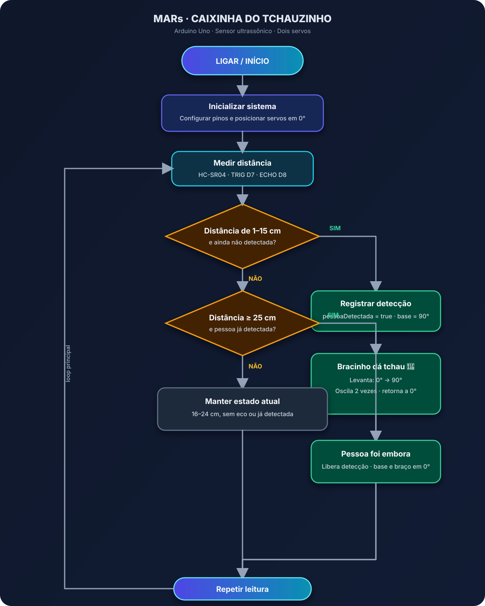

Fluxograma do sistema
Desenho visual da lógica do código: detecção, tchauzinho e retorno ao estado de espera.

Em telas pequenas, deslize para os lados para visualizar o diagrama completo.
Como ler
O fluxo segue o programa enviado: aproximação de 1 a 15 cm aciona o gesto uma vez; leituras intermediárias ou sem eco mantêm o estado; distância de 25 cm ou mais, depois de uma detecção, rearma o sistema. Durante o gesto, as rotinas com `delay()` pausam novas leituras do sensor.
Navegação rápida
Acesse as demais seções do projeto: